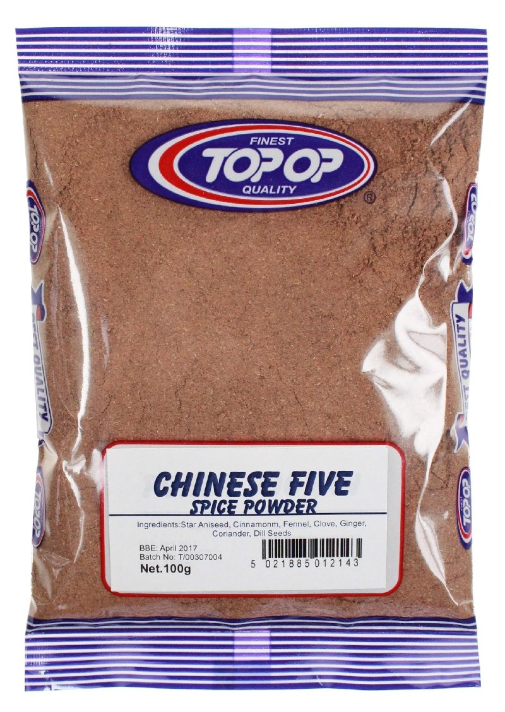
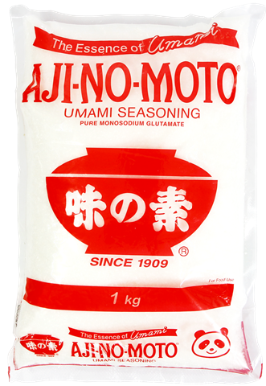

tea egg
egg party!
a truly iconic snack, put it in your pocket and discover it later, joyous. have it on a soup! with a stew! on noodles! good hot or cold, makes a great gift (popular with the ladies).
a truly iconic snack, put it in your pocket and discover it later, joyous. have it on a soup! with a stew! on noodles! good hot or cold, makes a great gift (popular with the ladies).
- many eggs
- 2 tbsp light soy

- 2 tbsp dark soy

- whole black peppercorns
- 2 tbsp loose black tea
- 5 star anise

- tsp five spice powder 
- 1/2 tsp MSG (optional but ultimately delicious) 
- 1/2 tbsp salt
- put enough water in a pan to submerge the eggs completely, and add in all of the other ingredients. bring to the boil, then leave to cool for half an hour
- take the eggs out, and crack them all over with a spoon. return to the pan and leave them to sit for some hours, or overnight in the fridge.